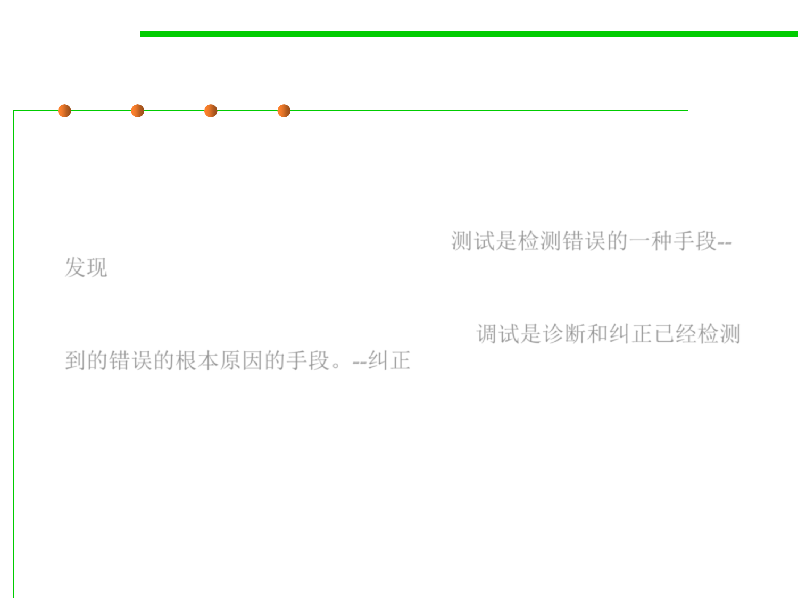

Testing vs. Debugging
7.5 Testing and Test-First Programming
▪ Some programmers use the terms “testing” and “debugging”
interchangeably, but careful programmers distinguish between the
two activities.
▪ Testing is a means of detecting errors. 测试是检测错误的一种手段--
发现
▪ Debugging is a means of diagnosing and correcting the root causes
of errors that have already been detected. 调试是诊断和纠正已经检测
到的错误的根本原因的手段。--纠正
▪ This section deals exclusively with testing. Debugging is discussed in
detail in 7.3.